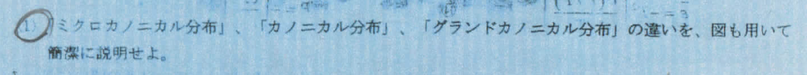
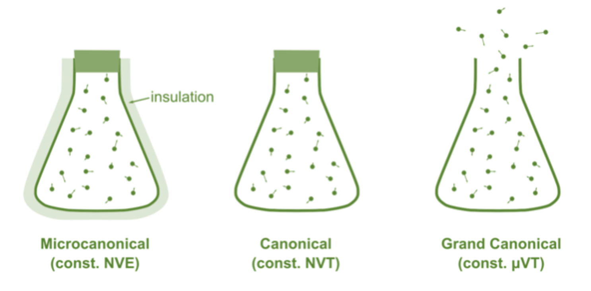
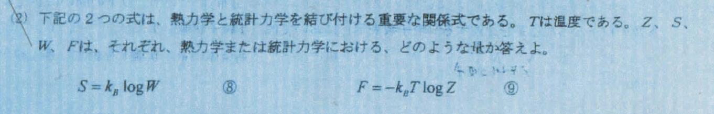
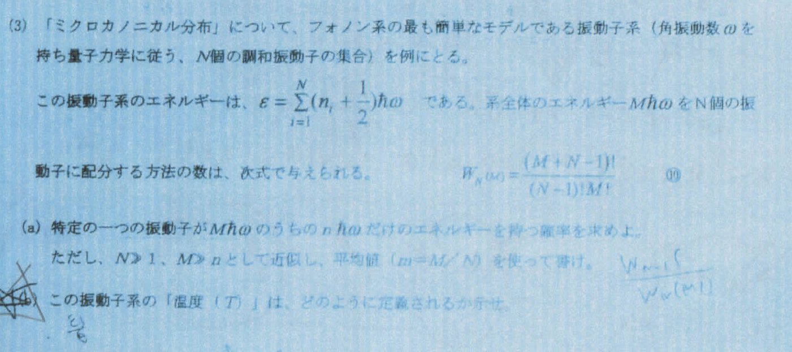
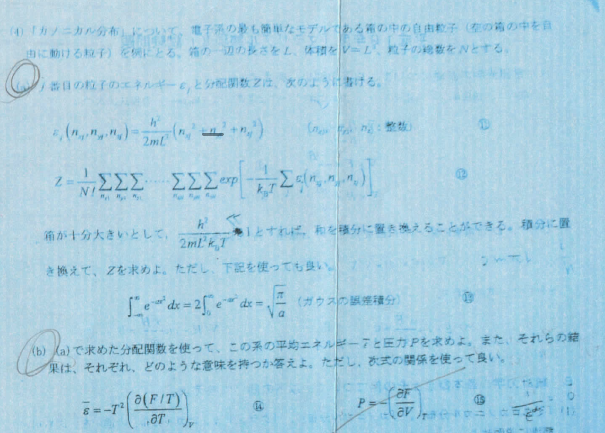

材料統計力学
\[ \require{physics} \require{mhchem} \require{ams} \]
講義内で重要そうだった部分
等重率の原理
孤立系において、微視的状態はどの状態にあることも同様に確からしい。
過去問まとめ
2007年度
注意：B側の問題だけです。
問1

\[ \begin{aligned} \dd U &= T \dd S - P \dd V \\ \dd F &= -S \dd T - P \dd V \\ \dd G &= -S \dd T + V \dd P \end{aligned} \]
ここら辺について頭に入れておく

| 性質 | ミクロカノニカル | カノニカル | グランドカノニカル |
|---|---|---|---|
| 状態 | 外界から独立している | 周囲と熱平衡 | 外界とやり取りがある |
| エネルギー | 一定(断熱) | やり取りあり(等温) | やり取りあり(等温) |
| 粒子数 | 一定 | 一定 | やり取りあり |
| 特徴量 | \(U\) | \(F\) | \(G\) |
問2

| 記号 | 物理量 | 説明 |
|---|---|---|
| \(S\) | エントロピー | 乱雑さを示す状態量 \(k_B\ln W\) |
| \(k_B\) | ボルツマン定数 | |
| \(W\) | 状態の数 | 系のエネルギーが等しい微視状態の総数 |
| \(F\) | ヘルムホルツエネルギー | 等温条件下で取り出し可能なエネルギー量 |
| \(\beta\) | 逆温度 \(1/k_BT\) | 温度の逆数として定義される量 |
| \(Z\) | 分配関数 | カノニカル分布の規格化定数 |
| \(J\) | グランドポテンシャル | 系における可能な状態の分布 |
| \(\Xi\) | 大分配関数 | グランドポテンシャルに関連する量 |
問3

- はただ単に確率の問題を解くだけ。ここで、 \(W_N(M) = {}_N \mathrm{H}_M = \binom{M+N-1}{M}\) ということに注意した方がいい。
- 求める確率は \(\frac{W_{N-1}(M-n)}{W_N(M)}\) であり、 \(m = M/N\) を使えば、
\[ \frac{1}{m+1} \left( \frac{m}{m+1} \right)^n \]
\[ \frac{m}{1+m}=\frac{M}{M+N} = \exp \qty(-\frac{\hbar \omega}{k_BT}) \]
問4

不明瞭なので、解答は不確かです。
問題自体は指示している通りに積分計算をすればいい。
分配関数とかについて軽くまとめる。かなり我流な考え方なので注意してください。
ある何らかの力が働いている系があ流として、そこでは圧力が定義可能である。 \(P=NkT\) となるわけだが、この系のうち、あるエネルギー \(E\) 以上を取る粒子が \(n\) 個存在してるとしたら、その割合は、 PE が圧力を超えていく確立に等しくて、 \(-n\dd P.E. = \dd P = kT \dd n\) で \(n\propto \exp(-P.E./kT)\) になるわけだけど、これを正規化するために \(Z = \sum \exp(-P.E./kT)\) をやっている。
で、この \(Z\) 自体を弄り回して \(T\) 関連の量を求めることもできる。
- 分配関数は
\[ \begin{aligned} Z = &\eval{\frac{1}{N!}}_{\text{粒子については区別しない}} \\ &\eval{\sum_{n_x} \sum_{n_y} \sum_{n_z}}_{x,y,z\text{方向全て}} \\ &\exp \qty(-\frac{1}{k_BT} \eval{\sum_i}_{N個} \frac{h^2}{2mL^2} (n_x^2+n_y^2+n_z^2)) \\ = & \frac{1}{N!} \qty(\sum_n \exp(-\frac{\beta h^2}{2mL^2}n^2))^{3N} \\ = & \frac{V^N}{h^{3N}N!} \qty(\frac{2\pi m}{\beta})^{3N/2} \end{aligned} \]